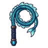

งูน้ำตก
มอนธาตุน้ำ Lv 26–34
เจอที่
| แมพ | โซน | Lv | ภูมิภาค |
|---|---|---|---|
| ยอดน้ำตกหมอกลอย | 26–31 | ป่ากองไฟ | |
| ยอดน้ำตกหมอกลอย | 28–34 | ป่ากองไฟ | |
| ยอดน้ำตกหมอกลอย | กองหินบนขอบผา | 31–33 | ป่ากองไฟ |
| ยอดน้ำตกหมอกลอย | กองหินบนขอบผา | 33–34 | ป่ากองไฟ |
ค่าสถานะตามเลเวล
| Lv | HP | ATK | DEF | MDEF | EXP | Job |
|---|---|---|---|---|---|---|
| 26 | 1,967 | 41–61 | 7 | 6 | 37 | 28 |
| 30 | 2,516 | 48–72 | 8 | 7 | 41 | 31 |
| 34 | 3,447 | 58–86 | 10 | 8 | 46 | 35 |
ตีด้วยธาตุไหนดี
แรงขึ้น: ลม ×1.75
เบาลง: ไฟ ×0.5 น้ำ ×0.25
วัตถุดิบที่ดรอป
| ของ | โอกาส | |
|---|---|---|
| ครีบคองูน้ำ | 55% | 1 ชิ้น (15% ได้ 2) |
อุปกรณ์ที่ดรอป (1)
| ของ | โอกาส |
|---|---|
 แส้งูน้ำตก | 0.12% |
สกิล
ยิงกระจาย (Lv 25+) · ยิงกระจาย (Lv 60+) · ปาตกใส่ (Lv 60+)